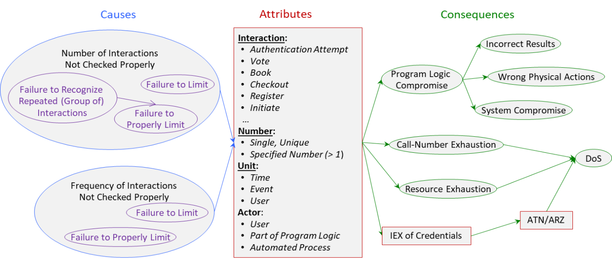

Control of Interaction Frequency Bugs (CIF) Class
Definition
We define Control of Interaction Frequency Bugs (CIF) as:
The software does not properly limit the number of repeating interactions per specified
unit.
In physics, frequency is the number of occurrences of a repeating event per unit time.
Interactions in software could be also per event or per user.
Type
Taxonomy
Fig. 1 depicts CIF causes, attributes and consequences.

Fig 1.
Control of Interaction Frequency Bugs (CIF) Class
- click on image for detailed view.
Attributes
Interaction -- Authentication Attempt, Book, Checkout, Register, Initiate.
This indicates the type of interactions to be controlled. Voting could be related
to election, census, survey, referendum and ballot. Booking could be of tickets, hotel
rooms or rental cars. Checkout could be of library books, hotel rooms or rental cars.
Register could be for computer games. Initiate could be for message exchange.
Authentication Event is the sequence of Authentication Attempts arriving at a particular server, possibly with the same partial credential, from
any source, that terminates by successful authentication or by blocking.
Number – Single, Unique; Specified Number (> 1).
This indicates the maximum number of occurrences allowed.
Unit – Time Interval, Event, User.
This indicates the specific unit per which the number of occurrences is controlled.
Time Interval could be in seconds, in days, etc. Event could be election, authentication,
on-line transaction to move funds, etc.
Actor – User, Part of Program Logic, Automated Process.
This indicates who/what is performing the repeating interactions. User could be authenticated
user, attacker. Part of program logic could be message exchange. Automated process
could be virus, bot.
Our taxonomy makes it abundantly clear that CIF is a "metaclass" in some senses. External
policies must define for each system or application what constitutes an interaction,
how many interactions should be allowed, and the unit. Each policy, then, defines
a different class of CIF concerns.
Causes
The graph of causes shows that there are two main causes: Number of Interactions not Checked Properly or Frequency of Interactions not Checked Properly.
Consequences
The graph of consequences shows what could happen due to the fault. Note that in the
graph of consequences, Credentials concerns username or password, smart card and personal identification number (PIN),
retina, iris, fingerprint, etc. Resource Exhaustion concerns memory, CPU or granted licenses.
Sites
Since the concept of interaction is so broad and high level, compared to most programming
languages, no general description of what is a site is feasible. Each system or application
must define its own concept of interaction. An interaction must then be mapped to
some code that controls or authorizes said interactions. More importantly, since a
failure may be the total lack of code to recognize and control frequency of interaction,
there is often no particular line or even block of code that can be pointed out as
missing the control code. An entire path may be indicated from the beginning of an
interaction event, that is, an outside agent indicates desire to start an interaction,
to the final chance in execution flow that code may refuse to authorize the event.
Related BF Classes
BF classes related to CIF are: IEX, ATN.
Related CWEs and SFP
BF Descriptions of CIF Related CWEs are provided here.
Application
Application examples are provided here.
References